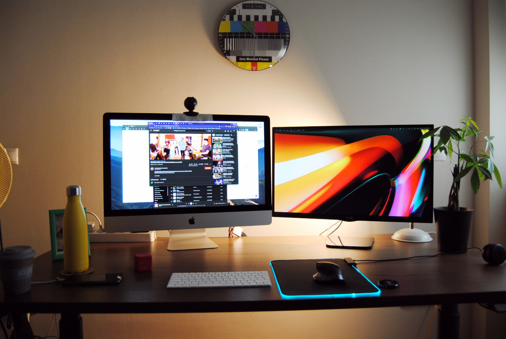

Hey! Hi! Hello!
I'm a product designer working remotely from Loading... Athens and occassionaly, from Loading... Amsterdam.
Design experience
Senior staff product designer (full-time) 2022 2023
Voicemod, Valencia (remote)
As a senior staff product designer @Voicemod I worked (remotely & autonomously) on elevating Voicemod's B2C voice-changing app on MacOS and Windows, slashing uninstall rates by ~80%.
I was part of an agile team consisted of another senior designer, two front-end and three back-end developers. We worked closely with our product manager and by aligning with users, we propelled ahead.
- Significantly reduced uninstall rates
- Led internal dev workshops
- Conducted external user interviews
- Provided constructive feedback and mentorship
- Developed & maintained the design system
Senior UX designer (full-time) 2021 2022
accusonus, acquired by Meta Reality Labs, Athens (remote)
Originally employed by accusonus leading to the company's acquisition by Meta Reality Labs, I contributed to the development of cutting-edge audio and visual technologies with practical designs based on user research.
- Designed user-centric experiences
- Collaborated with cross-functional agile teams, reducing development time by 20%
- Iterative design processes to improve usability
- Leveraged HTML/CSS/JS for prototypes
- Participated in design critiques elevating quality
Senior designer (full-time) 2019 2020 2021
Softomotive, acquired by Microsoft, Athens (hybrid)
At Softomotive / Microsoft, I worked on Power Automate Desktop, an automation tool included in Windows 11.
I served as the principal designer leading the UX design and research process. I worked on all the parts of UI/UX design throughout a transitional period throwing out the old and getting on with the new.
Moreover, I focused on the app's iconography (I hand-crafted almost two-hundred icons) and on making the app inclusive.
The results were stunning as users top-graded the app at third party pages like Gartner, G2, TrustRadius & Capterra as one of the best of the industry.
- Served as the principal designer of the agile team
- Led the UX design process & improved accessibility
- Worked on iconography
- Got great reviews at Gartner, Capterra & TrustRadius
Lead product designer (full-time) 2016 2017 2018 2019
ContactPigeon, Athens
ContactPigeon is a B2B SaaS e-commerce automation platform.
- Took charge of the entire UI/UX process
- Oversaw the design and development of key features, including the email editor, popup editor and push notification designer
- Kept direct touch with users
- Collaborated with cross-functional teams
- Ensured consistency and visual coherence
Product & visual designer (full-time) 2015 2016
Ellinopoula, Athens
Ellinopoula is a B2C ed-tech.
- Worked with product and marketing teams
- Played a vital role in enhancing the user experience
UI/UX designer (full-time) 2011 2012 2013 2014 2015
Sam media, Amsterdam
Sam Media is a B2C mobile content services company active in 46 countries with 1,5 million subscribers.
- Designed hundreds of landing pages and banners
- Collaborated with marketing
- Drove conversion rates over the roof
- Conducted tens of A/B tests
Designer & video editor (full-time) 2010
LR Health & Beauty, Athens
LR Health & Beauty is a direct sales enterprise.
- Designed captivating animated banners
- Created visually appealing video content that drove sales
Graphic / web designer (full-time) 2008 2009
Dousis publications, Athens
Dousis publications is a media publishing group.
- Took the lead in designing advertorial pages
- Designed eye-catching social media banners
Graphic designer (full-time) 2007 2008 2009 2010
Potnia Thiron, Athens
Potnia Thiron was a contemporary art gallery in Exarcheia.
- Designed exhibition catalogues and marketing collateral
- Collaborated with external partners to plan and set up exhibitions
Graphic designer (full-time) 2006 2007
INKY, Athens
INKY is a t-shirt and shop window sticker printing shop.
- Created and imprinted visually appealing designs for t-shirts
- Designed eye-catching shop window stickers
Education
BA in animation & interactive media
Middlesex University, Athens
BSc in AI and computer science
Birmingham University, Birmingham
Majored in computer science and networks 2000 2001 2002
High school of Hellinikon, Athens
A decade of workspaces
2023

2023

2022
2021

2021

2021

2020

2018

2016

2014

2013

2013
")
2006
")
2004
")
2002

1998
 
Humanity, creativity and purpose, transform companies and their relationships with the people they serve.
Organizations that prioritize humanity cultivate deeper emotional connections with customers.
Questions I'm asked
I have an academic background in design and computer science and I've been working in the UI/UX industry for the past 10 years.
In all my roles I've designed successful products that have received industry recognition and are being used by millions of people.
I have a curated list of blogs and online communities which I follow and learn things from. I attend design conferences and I'm a member of a local design community.
I try to stay up-to-date with the latest trends by regularly watching YouTube videos so I can incorporate them in my designs and push the limit further.
Figma (or Sketch), Photoshop, Illustrator, Premiere, After Effects, Lookback, Dovetail, Maze, GitHub or GitLab and anything else that might be needed. My favourite IDE is Sublime but I ocassionaly use VSCodium to test out cool AI plugins.
A supportive and inclusive culture that values collaboration, creativity and personal growth.
I seek an environment that encourages open communication, where ideas are valued and diverse perspectives are embraced.
It is important to me to be part of a company that prioritizes user-centric design allowing designers to be productive, innovative and giving them the space to pursue excellence through iterations. I prefer companies which have a strong sense of purpose and work on meaningful projects that make a positive impact.
I believe in fostering strong collaboration with cross-functional teams by maintaining open lines of communication, actively listening to different perspectives and valuing the expertise and insights each team member brings to the table.
By establishing a shared understanding of project goals and requirements, I ensure that design decisions align with both user needs and technical feasibility.
Regular meetings, workshops and design reviews are key to fostering a collaborative environment where ideas can be openly discussed, refined and implemented effectively.
Would love to hear from you
Résumé
Download
Dig deeper...
Click below to view the Figma file or the repo of this portfolio page.
...This is currently an ongoing project!
Credits
This page was made possible by using many technologies which are either open source, or free to use. The least I could do, is to give credits to all the contributors for making our world open. THANK YOU.